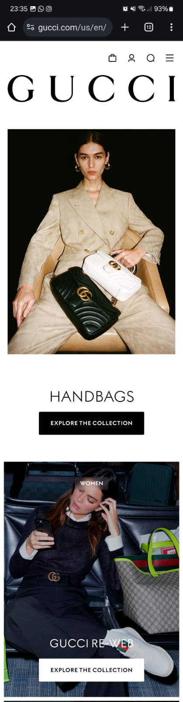

White Space and Clean Design
GUCCIThis site fits well with the principle by organizing your items in a way that there are white spaces, bringing more comfort and cleanliness when looking at your items, texts, and even the logo.

PARC: Contrast
UberThis site provides good control of the contrast of white and black, not “hurting” the eyes with different colors, and also providing constant comfort on its page.
Rule of Thirds
XiaomiThis site has good symmetry in its photos and banners, and the alignment of the art is adequate, not confusing the user when sees the ads.